System Noise Consideration
Akinori Maeda, Verigy
Paper-ID: 120836 May 2009
Introduction
When the noise is discussed, the meaning of "noise" is different. In general, probably it means "un-wanted or unnecessary signal components." In this document, "noise" means that the unnecessary signal components generated by the system, tester itself. It does not include the signal components generated by the device, DUT directly or indirectly. Therefore, it does not include the power supply noise that caused by the DUT, cross-talk from the signal generated by the DUT nor the ground bounce generated by the DUT.
It includes the system background noise, spurious noise generated by the system resources or the noise generated by the system resource itself.
In the audio frequency range, about less than 100 KHz, the major noise is the system background noise and the noise generated by the system resource itself. There are some spurious noises but the floor noise (the frequency spectrum is almost flat) is the major part of the noise in this region. Therefore, this noise affects the SNR results of the DUT measurements. For other parameters of the test, this kind of noise can be reduced by the averaging.
Above the audio frequency region, the major part of the noise is spurious noise that is generated by the digital circuits at the inside of the system or the switching power supplies. This kind of noise reduces the spurious performance, the dynamic range performance or the noise performance of the DUT. The averaging does not help to reduce the noise in most of the cases.
Noise in Low Frequency Range
The noise we are interested in the low frequency range is the floor noise. This is distributed all of the range we are focused. It does not include any spurious noise.
Noise Power Density
When we deal with the noise in the audio frequency range, the noise is the floor noise like the white noise. This noise must be treated as the power and its unit is "W". When we discuss the floor noise, the frequency bandwidth is very important and we must make it clear. The noise power is the integral results of the noise in the specified frequency range.
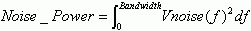
Therefore, the noise power is different when the frequency range is different even if the noise voltage is same. And it is difficult to determine which noise performance is better if the frequency bandwidth is different.
In general, when we measure the noise or evaluate the measurement results of the noise, we use the "noise power density". When the noise power density is used, we do not need to specify the frequency bandwidth and it is possible to compare the noise performance even if the frequency bandwidth is different. The unit of the noise power density is V/
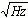
z or W/Hz. As shown in these units, the noise power density is free from the frequency bandwidth. This result can be used at any bandwidth. When you need the total noise power value, you perform the integral of the noise power density within the specified frequency bandwidth.When the noise is measured by the spectrum analyzer, the resolution bandwidth of the measurement must be displayed. This is because the unit of the measurement data of the spectrum analyzer is usually µV or dBm. With the resolution bandwidth, we can calculate the noise power density and can calculate the total noise from this noise power density. Without the resolution bandwidth, the measurement data is not meaningful when we discuss the (floor) noise. To calculate the noise power density:
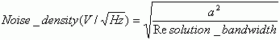
where, a is the value of the measurement data in voltage. When the data is in dBm, you need to convert the data value form dBm to voltage.
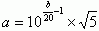
Where, b is the value of the measurement data in dBm. You also calculate the noise power density from the value of the data in dBm directly.
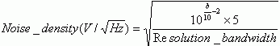
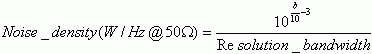
When you analyze the measurement results measured by the digitizer, you must know the sampling rate and the number of data of the measurement. At here, it assumes that the results are FFT calculated with the suitable window function and it is converted to the voltage value from the full scale of the digitizer. From the sampling rate and the number of data of the measurement, you can know the frequency bandwidth of the each frequency bin.
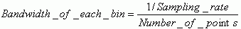
From the "bandwidth of each bin", you can calculate the noise power density.
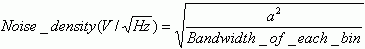
where,
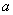
is the value of the measurement data in voltage.How the floor noise affects the test
In many cases, noise affects the several test results. But most of the cases, the large noise generated by un-sufficient design of the DUT board or the device itself affects the test results. Sometimes, the noise from the power supply causes the problem. This noise is also large and mostly generated by the device itself or the user circuits on the DUT board. Re-design the DUT board, or the adding the filters or capacitors help to solve these noise problems in many cases.
In this document, as we defined at the beginning, we do not handle the noise described above. The noise we are discussing is more likely the background noise and it cannot be removed or reduced easily in the application. But this kind of noise does not affect the most of the DC tests and the digital tests. This noise may affect the only high performance analog tests.
At the characterization phase, the noise may affect the analog performance results of the device. At the production phase, the noise may affect the analog test yield.
Let's assume that one of the test systems has the floor noise, its noise power density is
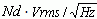
. And this test system is used to measures the SNR (Signal to Noise Ratio) or the effective bits of the ADC (Analog Digital Converter). The Eb (effective bits) of the ADC is calculated from the SNR as like below: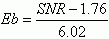
where, Eb in bit and SNR in dB. When the full scale of the ADC is Fs V and the bandwidth is Bd Hz, SNR is the ratio of the full scale power and the noise power in the bandwidth. At here, the full scale of the ADC is usually specified in V and it must be converted to the full scale power to calculate the SNR. If the full scale of the ADC is -Fs ~ Fs, the full scale power is Fs2/2. If the full scale of the ADC is 0 ~ Fs, the full scale power is Fs2/8.
The floor noise decreases the measured SNR value. To know how much the floor noise reduces the measured SNR value, the total noise power of the floor noise needs to be gotten. The total noise power of the system, A2 Vrms2, at the bandwidth Bd Hz (the bandwidth of ADC) is calculated as follows.
A2 = Nd2 x Bd
A = (Nd2 x Bd)½
If the true SNR performance of the ADC is SNRt, the true noise power of the ADC, Nt, is calculated as follows:
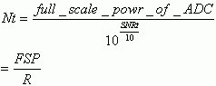
where
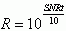
FSP = full_scale_power_of_ADC
The total noise including the floor noise, Na is:
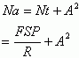
The measured SNR at this system, SNRm, is:
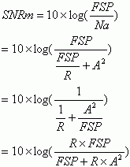
In this formula,
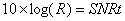
. Therefore,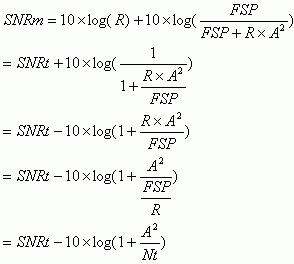
Form this result, the measured SNR is directly related to the ratio of the true noise power of ADC and the floor noise power.
Below figure shows the relation of the bandwidth and the SNR, normalized to the 1 Vpp, at the several noises power densities of the floor noise. This shows the maximum SNR measurement value limited by the floor noise.
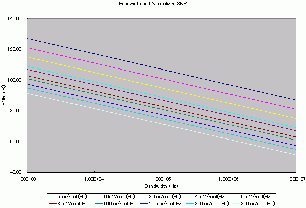
Figure 1: Bandwidth and Normalized SNR
When the noise power density is twice, SNR decreases 6 dB. When the bandwidth is twice, SNR is decreased in 3 dB. When the input range is twice, SNR increases 6 dB.
From this result, when you measure or evaluate the device that is 100 KHz bandwidth and has SNR performance more than 100 dB, you need the system that noise performance is less than 10 nV/.
Example
As the example, try to calculate the measured SNR of the 24bit ADC. The major parameters of this ADC are:
- Input Range: -2.828 ~ 2.828 [V]
- Resolution: 24 [bit]
- Sampling Rate: 96 [kHz]
- SNR: 106 [dB]
- Bandwidth: 43.54 [kHz]
From these parameters, the true total noise power of this ADC is:
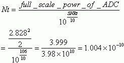
If this device is measured by the test system of that the floor noise power is 5 nV/, the measured SNR is:
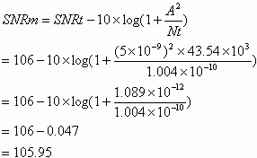
Therefore, this level of the floor noise power does not affect this SNR measurement.
If this device is measured by the system of that the system noise is 50 nV/, the measured SNR is:
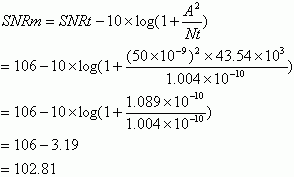
With this system, the measured SNR never be more than 103 dB. The noise of the system noise affects the SNR results largely.
Below figure shows the calculation results of the relation of the true SNR and measured SNR of this 24bit ADC at the various system noise environments.
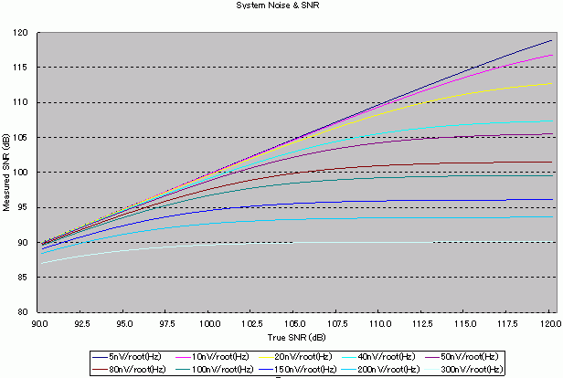
Figure 2: System Noise & SNR of 24bit ADC
From this result, to measure more than 105dB SNR of this ADC, the floor noise of the system must be less than 20 nV/.
Simulation of production yield
As described above, the floor noise of the system affects the SNR measurement and it reduces the SNR value. If the noise of the system affects the SNR measurement very largely, it may affect the production yield. In here, we simulate how the floor noise of the system affects the production yield.
To simulate the production yield of the 24bit ADC, below assumptions are applied:
- The distribution of the true SNR is Gaussian distribution (Actually, this is not expected at the real world, but for the easier calculation, we assume this)
- The mean of the true SNR distribution is 106 dB
- The sigma of the true SNR distribution is 2 dB
- The test limit of the SNR is 100dB (This is just assumption)
- The number of device is 1002
The true SNR distribution of this simulation is shown in below figure.
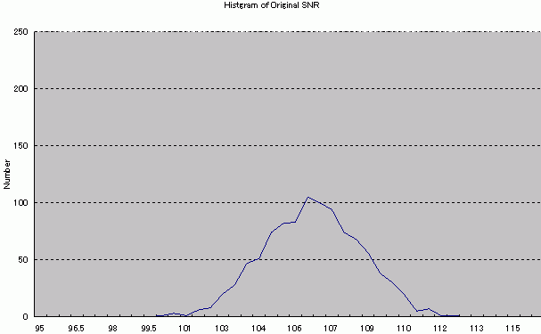
Figure 3: Histogram of Original
The mean of this distribution is 105.95 and the sigma is 1.96. The yield of the SNR test is 99.9 %.One device fails the SNR test out of 1002 devices.
When the floor noise is 5 nV/, the distribution is changed as like below.
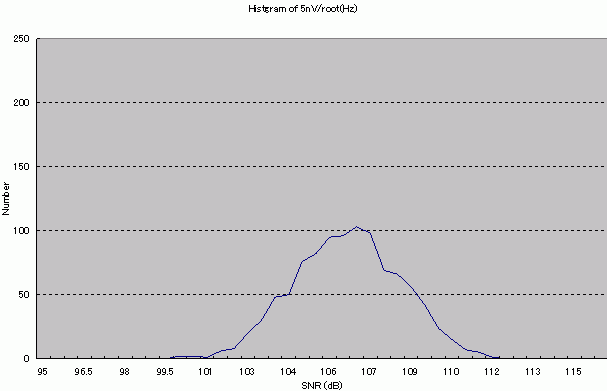
Figure 4: Histogram of 5 nV/root(Hz)
The mean of this distribution is 105.90 and the sigma is 1.94. The yield is 99.8 %. Two devices fail the SNR test.
When the floor noise is 50 nV/, the distribution is:
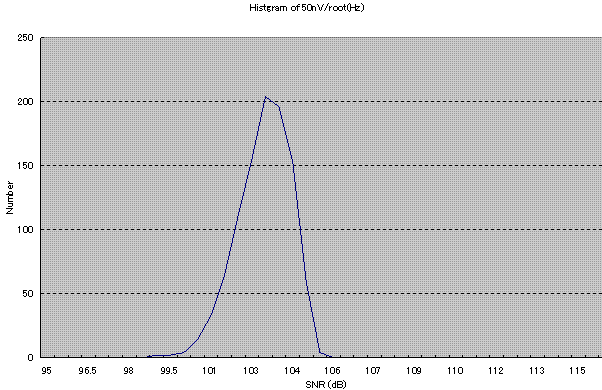
Figure 5: Histogram of 50nV/root(Hz)
The mean of this distribution is 102.68 and the sigma is 0.96. The yield is down to 99.2 %. Eight devices fail the SNR test.
When the floor noise is 80 nV/, the distribution is:
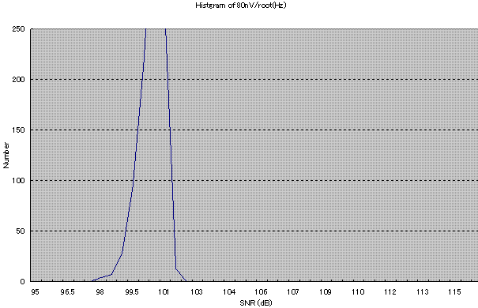
Figure 6: Histogram of 80nV/root(Hz)
The mean of the distribution is 100.13 and the sigma is 0.56. The yield is badly down to 65.4 %. 348 devices fail the SNR test.
Below figure shows the combined histograms described above.
- Black: Original Histogram
- Purple: Floor noise 5 nV/ Histogram
- Blue: Floor noise 50 nV/ Histogram
- Red: Floor noise 80 nV/ Histogram
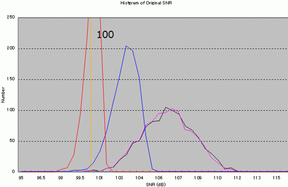
Figure 7: Histogram of all
Below table shows the summary of the yield of this ADC at several noise environments.
System Noise nV/root(Hz) |
Mean dB |
Sigma dB |
Yield % |
|---|---|---|---|
0.00 |
105.95 |
1.96 |
99.90 |
5.00 |
105.90 |
1.94 |
99.80 |
10.00 |
105.75 |
1.88 |
99.80 |
20.00 |
105.21 |
1.66 |
99.80 |
40.00 |
103.58 |
1.17 |
99.50 |
50.00 |
102.68 |
0.96 |
99.20 |
80.00 |
100.13 |
0.56 |
65.40 |
100.00 |
98.65 |
0.40 |
0.00 |
150.00 |
95.64 |
0.21 |
0.00 |
200.00 |
93.34 |
0.12 |
0.00 |
300.00 |
89.97 |
0.06 |
0.00 |
Noise in High Frequency Range
In the high frequency range, the major interest noise is the spurious noise. As the resolution of the ADC/DAC is not so large in this frequency range, the quantization noise of the ADC/DAC is usually larger than the floor noise. Therefore the spurious noise is focused in this frequency range.
The sources of the spurious noise are:
- Internal clock oscillator of Test System
- Internal clock of Test System
- Internal digital signals of Test Resources
- Internal digital circuits of Test Resources
- Switching of the power supply. It is not switching ON/OFF of the power supply. This switching means the high speed switching to generate AC power signal from DC supply in the power supply modules.
You can see the harmonics of these signals and the inter-modulated signals as the spurious. Therefore, it is very difficult to find out the source of the spurious.
You can reduce the spurious noise using the low pass filter or the band pass filter. But if the spurious noise is the common mode, the filter on the DUT board does not reduce this spurious. It is usual that the noise coming from the power supply is the common mode noise. As it is very difficult to reduce the common mode noise at DUT board, the sourcing or the measurement must use the differential mode when the common mode noise is significantly affects the test results.
How the spurious noise affects the test
The spurious noise mainly affects the spurious measurement, dynamic range measurement or the noise measurement. If the spurious exists in the frequency range of the test, it reduces the dynamic range and it increases the total noise power.
You can see the spurious in the spectrum analysis result of the measured waveform or the measurement results by the spectrum analyzer. Therefore, you can easily know that how the spurious affects the test. But it is difficult to estimate the spurious noise value from the system component evaluation results. This is because the magnitude of the spurious is changed by the condition of the system. The spurious is changed how you connect the ground, what resources you are using, what are the frequencies of the resources.
If the spurious signals exist at the out side of the bandwidth you are interested, the low pass filter or the band pass filter can eliminate these spurious signals. If the spurious signals are stable, you can calibrate out these signals after the measurement. In this method, you need to measure the spurious only without the signals from the DUT. Then, after the measurement of the signals from DUT, the spurious components are subtracted from this measured result. Usually, averaging does not help to reduce the effect of the spurious.
Appendix A: How to get "better looking" measurement results
If you know the characteristics of the noise measurement, you can control the "look" of measurement results. When you measure the noise by the spectrum analyzer, the displayed spectrum value is usually in dBm as default. As you already know, this value itself does not show any meaningful information about the noise. But the engineer who does not know the characteristics of the noise measurement, I hope that almost all of you are not such engineers, easily believes this dBm value as the noise value. For example, I made the pseudo "noise performance comparison" presentation. How do you think?
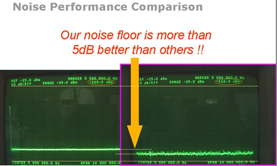
Figure A1: Pseudo noise performance comparison presentation
As you easily understand, this presentation is some kind of fake. The complete photos in the presentation are shown below.
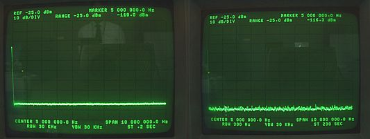
Figure A2: Actual data of the measurement
The input condition of the spectrum analyzer in both measurements is same actually. Only the difference is the resolution bandwidth at the measurement. One is 30 KHz and another is 300 Hz. This spectrum analyzer has the capability to show the noise power density and the noise power density results of those measurements are shown below.
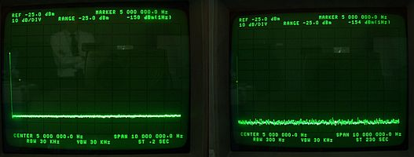
Figure A3: Actual data of the measurement with noise power density displayed
The noise power density measured with the 30 KHz resolution bandwidth is -158 dBm/Hz and the one measured with the 300 Hz resolution bandwidth is -154 dBm/Hz. The noise power density measured with the 300 Hz resolution bandwidth is worse than the one measured with the 30 KHz resolution bandwidth. The spectrum analyzer measures the real noise power within the resolution bandwidth when the noise power density measurement is selected. The noise power density is calculated from the measured true noise power, not from the amplitude of the spectrum. When the resolution bandwidth is changed, it changes the internal path of the spectrum analyzer and it changes the noise power measurement results. Therefore, it happens that the noise power density at the narrower resolution band width is worse than the one at the wider resolution bandwidth. This is the reason why the noise power density result and the spectrum amplitude data do not follow the formulas provided previously.
In general, narrower bandwidth has the smaller spectrum amplitude data if the noise power density is same. Therefore, it should set the spectrum analyzer as like below if you want to get "better looking" spectrum results.
- Set narrower resolution bandwidth
- Be careful, as like above example, the noise characteristic of the internal of the spectrum analyzer is changed when you change the resolution bandwidth. When you set the narrower resolution bandwidth, the spectrum analyzer may have the larger noise power density.
- Set narrower video bandwidth
The video bandwidth is the low pass filter inserted after the spectrum measurement. Therefore, it reduces the noise of the spectrum data. It similar likes to show the average results of the several measurements.
- Increase the number of data when you use the digitizer
- This reduces the bandwidth of each spectrum after FFT
Below figures shows the example. The sampling frequencies of both spectrums are same and only the number of sampling is different.
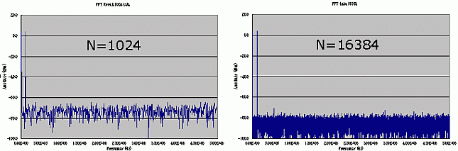
Figure A4: The difference of the number of sampling
The noise power density and the SNR of both spectrums are:
- 1024 points
- Noise Power Density: 577.15 nV/
- SNR: 48.76 dB
- 16384 points
- Noise Power Density: 571.41 nV/
- SNR: 48.84 dB
The noise floor level at N=16384 is lower than the noise floor level at N=1024. But the noise power density and SNR are same in both cases.